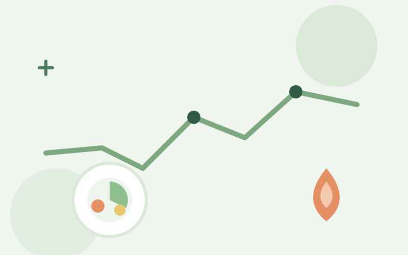

مقاومة الأنسولين: ما هي وكيف تتعامل معها بالتغذية؟
Insulinresistenz: Was ist das und wie hilft Ernährung?
مقاومة الأنسولين من أكثر الحالات شيوعاً في مجتمعنا، وغالباً تمر دون تشخيص. اكتشف كيف يمكن للتغذية السليمة أن تحدث فرقاً حقيقياً.
Insulinresistenz ist eine der häufigsten Erkrankungen — oft unentdeckt. Erfahren Sie, wie gezielte Ernährung einen echten Unterschied machen kann.
احجز استشارة ←Beratung anfragen ←